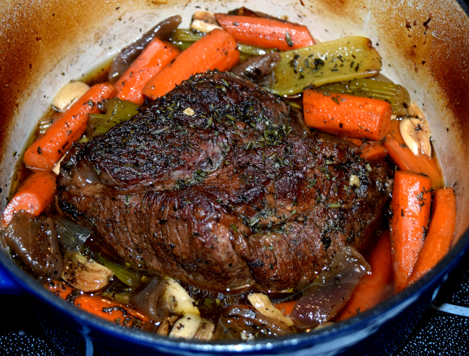

Pot Roast With Mashed Potatoes
New England
Pot roast is a term used to describe a beef dish made by slow-cooking a usually tough cut of beef in moist heat, sometimes with vegetables. Tougher cuts such as chuck steak, bottom round, short ribs and 7-bone roast are preferred for this technique. These cuts are American terms, different terms and butchering styles are used throughout the Anglophone world and beyond. While the toughness of the fibers makes them unsuitable for oven roasting, slow cooking tenderizes the meat as the liquid exchanges some of its flavor with the beef.
Ingredients
- 1 (3 pound) beef chuck roast
- Salt and ground black pepper to taste
- 4 (10.5 ounce) cans condensed beef broth
- 1 cup water
- 1 white onion, cut into large wedges
- 5 cloves garlic
- 1 (16 ounce) package carrots, peeled
- 1 sprig fresh rosemary
- 5 pounds Yukon Gold potatoes, peeled and diced
- 1 (12 ounce) can evaporated milk, or as needed
- ½ cup butter
- Salt to taste
Instructions
- Step 1
Season chuck roast with salt and black pepper.
- Step 2
Sear in a large, deep skillet or Dutch oven over medium heat until browned, about 10 minutes per side.
- Step 3
Pour beef broth and water into the skillet with roast. Arrange onion wedges and garlic cloves around the meat. Spread carrots atop roast and place sprig of rosemary atop carrots. Turn heat to medium-low and simmer until tender, about 6 hours.
- Step 4
45-60 minutes before the roast is finished cooking start the mashed potatoes. Cover potatoes with water in a large pot and bring to a boil
- Step 5
Reduce heat to low and simmer until tender, about 30 minutes. When finished, drain the potatoes.
- Step 6
Mash potatoes with butter and half the evaporated milk until smooth; slowly mash remaining evaporated milk into potatoes to achieve the desired consistency. Season with salt.
- Step 7
Remove 1 or 2 cloves of garlic from skillet and mash cloves on top of the roast; Remove roast and vegetables from skillet and plate. Serve with mashed potatoes.